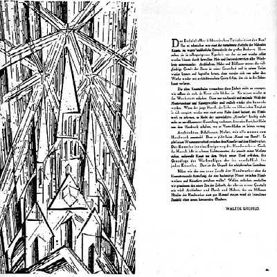

Walter Gropius funda la escuela Staatliches Bauhaus en Weimar, Alemania, con el objetivo de unificar el arte, la artesanía y la tecnología.
Publicación del manifiesto que detalla la filosofía y los objetivos del Bauhaus, enfatizando la colaboración entre artistas y artesanos.
Se realiza la primera exposición del Bauhaus en Weimar, presentando trabajos de estudiantes y profesores.
Debido a la presión política en Weimar, el Bauhaus se traslada a Dessau, donde Walter Gropius diseña un nuevo edificio para la escuela que se convierte en un ícono del modernismo.
Walter Gropius renuncia como director y es sucedido por Hannes Meyer, quien enfatiza aún más el enfoque en la funcionalidad y la producción en masa.
Hannes Meyer es destituido y Ludwig Mies van der Rohe toma la dirección, intentando mantener la escuela apolítica frente a la creciente presión del gobierno nazi.
La escuela Bauhaus en Dessau es cerrada por las autoridades locales bajo la influencia del régimen nazi.
Mies van der Rohe reabre la escuela en Berlín como una institución privada, pero es forzada a cerrar definitivamente por los nazis ese mismo año.